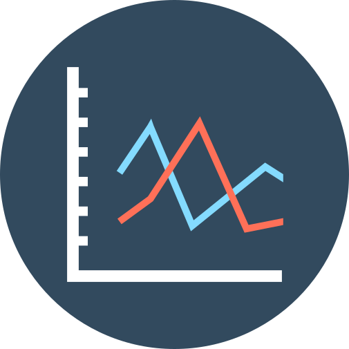

EDYP KOALOWSKI
Curriculum Vitae

Full Name
Edyp Koalowski

Address
Edypkowo 6/10, Lovely Place

Phone
552 000 552

edypek@development.com

Team work
Very well organization of time and work

Work in an international environment
Analytical thinking
Environmental protection

Classical literature i XIX century

Travels

Obstacle course racings
WYKSZTAŁCENIE
| 03.2018 - currently | Uniwersytet Ekonomiczny w Krakowie |
| Management and production engineering | |
| Specjalność: Zarządzanie procesami zakupowymi w przedsiębiorstwie | |
| Poziom kształcenia: studia magisterskie |
| 03.2017 - 07.2018 | Uniwersytet Ekonomiczny w Krakowie |
| Zarządzanie i inżynieria produkcji | |
| Specjalność: Zarządzanie i inżynieria produkcji żywności | |
| Tytuł zawodowy: magister |
| 08.2015 - 01.2016 | International Business Academy |
| Kolding, Dania | |
| Marketing Management | |
| Poziom kształcenia: AP Degree | |
| Studia w ramach VELUX Scholarship Programme |
| 10.2013 - 01.2017 | Uniwersytet Ekonomiczny w Krakowie |
| Zarządzanie i inżynieria produkcji | |
| Tytuł zawodowy: inżynier |
DZIAŁALNOŚĆ I OSIĄGNIĘCIA NAUKOWE
| 01.2018 - nadal | Zespół Ocen Sensorycznych |
| analiza odorów, analiza sensoryczna | |
| żywnościowych i nieżywnościowych |
| 10.2017 - nadal | Koło Naukowe Opakowalnictwa Towarów |
| ocena organoleptyczna, badanie właściwości fizycznych | |
| i mechanicznych opakowań, organizacja konferencji naukowej |
| 02.2016 - 01.2019 | Koło Naukowe Chemiczno-Towaroznawcze |
| badania dóbr szybkozbywalnych (FMCG), uczestnictwo | |
| w Festiwalu Nauki i Dniach Otwartych Uniwersytetu | |
| Ekonomicznego w Krakowie, organizacja konkursu na | |
| temat żywności ekologicznej |
| 02.2016 - 07.2017 | Program MENTOR (Erasmus Student Network) |
| Pomoc studentom zagranicznym w zaaklimatyzowaniu | |
| się w kraju |
| konferencje i publikacje | "Opakowania towarów niebezpiecznych w transporcie |
| drogowym" - wystąpienie na II Ogólnopolskiej Konferencji | |
| Naukowej Wszystkie "wymiary" opakowań oraz publikacja | |
| w monografii studenckiej, Kraków 2018 |
| "The importance of modernisation in realisation | |
| of sustainable development principles - at the example of | |
| Heating Plant "Piast" in Bieruń, Poland - prezentacja posteru | |
| w ramach The 17th International Conference on Current Issues | |
| of Sustainable Development, Opole 2017 | |
| oraz publikacja Economic and Environmental Studies, | |
| Vol. 18, Opole 2018 |
Next Page